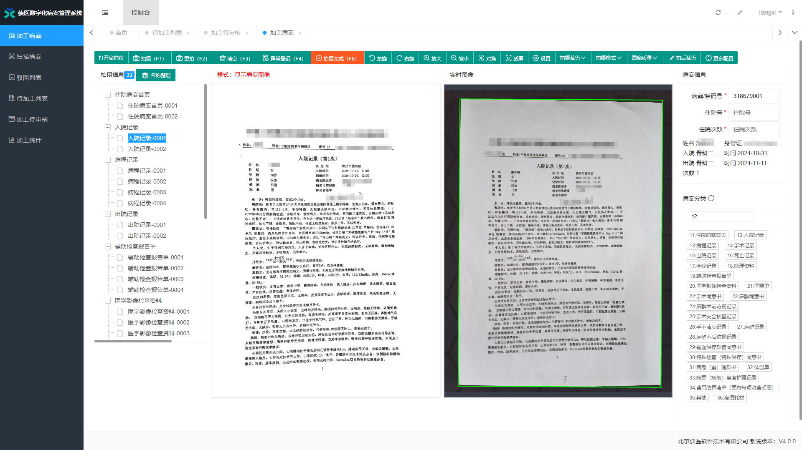
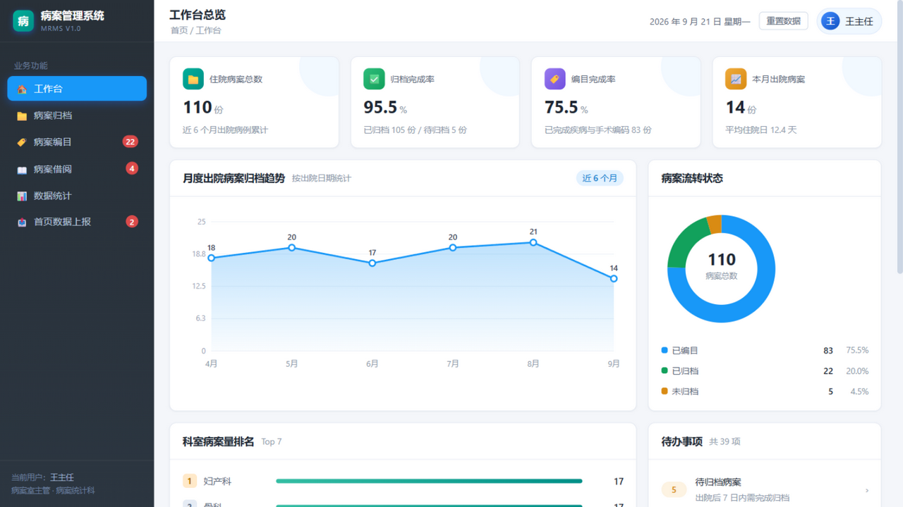

原型决策板 · WP1 逐屏签认
全局「不做什么」清单 + 侠医 DMRMS 视觉基准（实测对齐） + 六屏「保留/改/删/加」建议 + 10 个待拍板决策点。逐屏过一遍，回复决策编号即可；签认后本页即冻结为原型范围基线。
签认前先看：全局「不做什么」清单（建议冻结）
- 不做DRG / DIP 预分组 —— 真实系统重头戏但超出课程范围（今创等厂商核心卖点，仅答辩口头提及即可）
- 不做无纸化病案 / HIS-EMR 自动采集 —— 我们的手工登记即演示口径
- 不做条码 / RFID 病案示踪 —— 保留架位概念即可
- 不做服务端分页 —— 前端全量内存模型（演示规模 ≤ 数百条），不改组件就不做
- 仅 API封存、架位管理、操作日志查询 —— 后端已有接口，本期不做界面
- 命名对齐质控规则口径对齐官方「完整性/一致性/逻辑性」，上报通道命名 HQMS 演示通道（P1 文案级改动）
视觉基准 · 侠医 DMRMS 实测对齐（拾色器 + 标尺，非目测）
参考对象：侠医《数字化病案管理系统》工作站界面（1920×1079 实拍）。用像素采样脚本（prototype/xiayi_palette.py）实测其配色与布局，再用浏览器实测我们 demo 的同位尺寸，逐项对照：

| 实测项 | 侠医（像素采样） | demo（浏览器实测） | 对齐动作 |
|---|---|---|---|
| 交互主色（激活菜单/树选中） | #1898f8 亮蓝 | #1d6ef5 | 主题层换为 #1898f8（同色相，侠医实测值） |
| 品牌青（工具栏/强动作/进度） | #009088 | 无 | 新增第二主色：logo、KPI 蓝位、进度条、图表序列首色 |
| 强调橙（完成类按钮） | #f85020 | --warning #d98b13 | 不迁移（demo 语义色已够用，避免过冲） |
| 侧栏底色 | #283038 炭灰 | 深蓝渐变 rgb(20,35,60) | 换炭灰渐变 #283038→#2c3641 |
| 扫描定位绿 | #00f800 | — | 功能色不采用（属扫描仪工位） |
| 侧栏宽度占比 | 10.4%（199/1920，1280 下≈133px） | 17.0%（218/1280） | 见 D10：侠医是纯图标小字号工位导航，demo 导航更大气 |
| 工具栏高度 | 40px@1920（双行：标签栏+工具栏） | 单行顶栏 60px@1280 | 布局模式差异，归 D10 |
| 圆角 | ≈直角（工位软件风） | --radius 10px | 归 D10（改圆角属全局气质变更） |
| 右信息面板 | 常驻 ≈17%（病案信息/分类） | 无（详情用抽屉） | 归 D10 工位式布局 |
按实测色应用后的效果（打开整页预览），并经拾色器回测：激活导航/环图实测 #1898f8 与目标零偏差；侧栏 #2a333d≈#283038；logo 主色 #00a090、进度条两端 #36bea3→#018f87 均落在青色渐变域内——实测 → 应用 → 回测，全命中：

决策 D9 色板：(a) 按实测双主色方案生效（交互蓝 #1898f8 + 品牌青 #009088 + 炭灰侧栏 #283038，主题层零组件改动）推荐；(b) 保持 demo 原蓝 #1d6ef5 不动；(c) 全站改青绿主导（--primary 也换青，注意：与侠医实测不符，他们交互色就是蓝）
决策 D10 布局：(a) 保持卡片布局+新色板 推荐；(b) 仅编目页试点「工位式三栏」（左待编队列 + 中工作区 + 右信息面板，对齐侠医，估 0.5 天）；(c) 全站工位化（侧栏收窄 133px、直角化、顶栏改双行，估 2 天+全组件回归）
屏 1 · 工作台

| 元素 | 判定 | 说明 |
|---|---|---|
| KPI 卡 ×9、月度趋势、状态环图、科室排名 | 保留 | 改由真数据计算（数据全量在前端内存） |
| 待办中心 / 最近操作动态 | 改 | 动态从 localStorage 假数据 → 后端 oper_log 真审计流 |
| 「重置数据」按钮 | 删 | 接真库后无意义（重置=清空数据库，危险且不合规） |
决策 D1：平均费用 / 平均住院日两个 KPI 后端暂无统计接口 —— (a) 前端内存计算，零成本 推荐；(b) 砍掉这两个卡片
屏 2 · 病案归档

| 元素 | 判定 | 说明 |
|---|---|---|
| 病案登记表单（患者/科室/医师/出入院） | 保留 | → POST /records；表单里的诊断/编码/费用落首页表 |
| 多条件检索、批量归档、详情抽屉、CSV 导出 | 保留 | 批量归档 → 批量回收（后端归档流水留痕） |
| 删除按钮 | 改 | 点击提示「病案依法不得删除」（合规），按钮不删 |
| 页数字段（pageCount） | 改 | 后端无对应，固定值展示或置灰 |
决策 D2：删除按钮 —— (a) 禁用+合规提示 推荐；(b) 保留可删（仅演示）
屏 3 · 病案编目

| 元素 | 判定 | 说明 |
|---|---|---|
| 待编目队列（左侧滚动列表） | 保留 | = 回收待编目病案，语义与后端完全一致 |
| ICD-10 / ICD-9-CM3 选码联动 | 保留 | 字典从后端拉（含 Redis 检索接口） |
| 编目提交 | 改 | 一键 = 编目 + 首页落库 + 自动质控 + 自动上架（后端动作链） |
| 质量分级（甲/乙/丙） | 改 | 由质控结果推导：无异常→甲，仅 WARN→乙，有 ERROR→丙 |
决策 D3：质量等级来源 —— (a) 质控结果自动推导 推荐，答辩亮点；(b) 编目员手工选择（现状）
屏 4 · 病案借阅

| 元素 | 判定 | 说明 |
|---|---|---|
| 借阅申请（病案选择/借期/事由七选一） | 保留 | → 后端申请接口，借期=应还时间 |
| 审批通过 / 驳回（附意见） | 保留 | 通过 = approve+lend 链式（后端多级审批保留） |
| 归还、逾期监控、催还预警 | 保留 | 后端有定时催还任务，真数据 |
| 续借（+7 天） | 加后端 | 需新增续借端点（约 15 行，随 WP3 交付） |
决策 D4：续借 —— (a) 做后端端点 推荐，成本低；(b) 砍掉续借按钮
屏 5 · 数据统计

| 元素 | 判定 | 说明 |
|---|---|---|
| 病案量趋势 / 疾病谱 / 科室明细 / 费用住院日分布 | 全保留 | 数据源换成后端真数据 |
| 质量等级分布图 | 保留 | 依赖 D3 的质控推导结果 |
| CSV 导出 | 保留 | 前端 Blob 导出不变 |
决策 D5：统计口径 —— (a) 前端内存计算（零适配）推荐；(b) 走后端 /stats/* 接口再渲染（更真实，适配层多一块）
屏 6 · 首页数据上报

| 元素 | 判定 | 说明 |
|---|---|---|
| 批次列表 / 新建批次（选月份） | 保留 | → 真批次表；状态：待上报/已接收/已退回 |
| 上报前校验面板（问题清单） | 改 | 展示后端质控结果（逐字段异常），非纯前端校验 |
| 执行上报 / 数据包导出 | 保留 | → 真批次提交 + XML 落盘桩回执 |
决策 D6：校验面板数据源 —— (a) 后端质控结果 推荐，真数据；(b) 纯前端字段校验（现状）
额外两个范围决策
- D7 病案复印服务（真实系统标配：患者/司法复印申请-受理-在场复印）：(a) 本期不做，留 API 位 推荐；(b) P1 加（一张表+两个接口+一个页面，约半天）
- D8 登录页样式：(a) 沿用 demo 现有设计语言（深蓝卡片风）推荐；(b) 另出设计稿再确认
怎么签认
- 全局清单 + 视觉基准（D9/D10）+ 六屏（D1-D8）全部过完后回复决策，例：
D1a、D2a、…、D8a、D9a、D10a（全推荐项） - 任何一屏想改布局/字段，直接指屏说，我改完重新截图更新本页
- 全部签认后：色板经主题层并入
app.css，本页 + screenshots/ 冻结为原型基线，WP2 据此拆故事开工